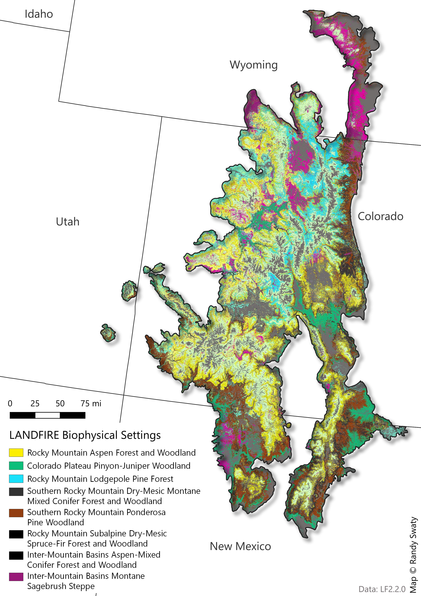

Past: Historical Ecosystems
LANDFIRE’s Biophysical Settings (BpSs)
BpS models represent the vegetation system that may have been dominant on the landscape prior to Euro-American settlement. These models are based on a combination of the current environment and an approximation of the historical disturbance regime. Read more.
BpS models represent the vegetation system that may have been dominant on the landscape prior to Euro-American settlement. These models are based on a combination of the current environment and an approximation of the historical disturbance regime. Read more.
Check out this 3-minute tutorial for a quick refresher on the basics of Biophysical Settings Models.
Use this page as a starting point to explore the most prevalent BpSs in the SRFSN Colorado Plateau Subregion. In addition to the charts and maps, the historical disturbance data can be directly accessed using this site.
Summary
- Prior to European colonization, the most dominant vegetation system for the Wyoming Sagebrush Subregion was Colorado Plateau Pinyon-Juniper Woodland.
- Historically, this system experienced ~58,000 acres of fire annually across the subregion historically.
- The Rocky Mountain Montane Riparian Systems had the most disturbance annually with substantial amounts of ‘wind/weather/stress’.
Scroll down to explore the “historical disturbances per ecosystem” using the interactive web app.
Most Prevalent Biophysical Settings

Historic Annual Acres Burned (per ecosystem)

Top Historical Fire Regimes

Historical Disturbances (per ecosystem)
Data Table
| ZONE | BPS_MODEL | BPS_NAME | GROUPVEG | FRI_REPLAC | FRI_MIXED | FRI_SURFAC | FRG_NEW | ACRES | REL_PERCENT |
|---|---|---|---|---|---|---|---|---|---|
| 23 | 10160_16_23_24_25 | Colorado Plateau Pinyon-Juniper Woodland | Conifer | 435 | 195 | 2,265 | III-B | 5,557,216 | 16.5 |
| 23 | 10810_15_16_23_24_28 | Inter-Mountain Basins Mixed Salt Desert Scrub | Shrubland | 616 | NA | NA | V-B | 4,737,307 | 14.0 |
| 23 | 10804_6_12_15_16_17_18_23_24_25 | Inter-Mountain Basins Big Sagebrush Shrubland-Upland | Shrubland | 120 | NA | NA | IV-B | 3,367,781 | 10.0 |
| NA | NA | Barren-Rock/Sand/Clay | Barren-Rock/Sand/Clay | NA | NA | NA | NA | 2,905,993 | 8.6 |
| 23 | 11590_16_23_24_26 | Rocky Mountain Montane Riparian Systems | Riparian | 270 | NA | 79 | III-A | 1,261,293 | 3.7 |
| 23 | 10780_16_23_24_25 | Colorado Plateau Blackbrush-Mormon-tea Shrubland | Shrubland | 146 | 162 | NA | III-A | 1,231,405 | 3.6 |
| 23 | 11070_23_24 | Rocky Mountain Gambel Oak-Mixed Montane Shrubland | Shrubland | 51 | 150 | NA | III-A | 1,128,063 | 3.3 |
| 23 | 10660_16_23_24 | Inter-Mountain Basins Mat Saltbush Shrubland | Shrubland | NA | NA | NA | NA | 1,096,791 | 3.2 |
| 23 | 11350_16_23_24 | Inter-Mountain Basins Semi-Desert Grassland | Grassland | 25 | NA | NA | II-C | 727,850 | 2.2 |
| 24 | 10810_15_16_23_24_28 | Inter-Mountain Basins Mixed Salt Desert Scrub | Shrubland | 616 | NA | NA | V-B | 672,002 | 2.0 |
| 28 | 10160_15_28 | Colorado Plateau Pinyon-Juniper Woodland | Conifer | 430 | 194 | 2,245 | III-B | 607,277 | 1.8 |
| 16 | 10160_16_23_24_25 | Colorado Plateau Pinyon-Juniper Woodland | Conifer | 435 | 195 | 2,265 | III-B | 571,369 | 1.7 |
| 23 | 10010 | Inter-Mountain Basins Sparsely Vegetated Systems | Sparse | NA | NA | NA | NA | 515,238 | 1.5 |
| 23 | 11261_16_23_24 | Inter-Mountain Basins Montane Sagebrush Steppe-Mountain Big Sagebrush | Shrubland | 49 | NA | NA | IV-A | 476,607 | 1.4 |
| 23 | 11530_16_23_24_25_27 | Inter-Mountain Basins Greasewood Flat | Shrubland | 208 | NA | NA | V-A | 463,167 | 1.4 |
| 23 | 10803_6_12_15_16_17_18_23_24_25 | Inter-Mountain Basins Big Sagebrush Shrubland-Semi-Desert | Shrubland | 151 | NA | NA | IV-B | 471,772 | 1.4 |
| 16 | 11261_16_23_24 | Inter-Mountain Basins Montane Sagebrush Steppe-Mountain Big Sagebrush | Shrubland | 49 | NA | NA | IV-A | 390,572 | 1.2 |
| 23 | 10640_15_16_17_23_24_27_28 | Colorado Plateau Mixed Low Sagebrush Shrubland | Shrubland | 239 | 119 | NA | III-A | 419,197 | 1.2 |
| 23 | 10510_15_16_17_22_23_24_25 | Southern Rocky Mountain Dry-Mesic Montane Mixed Conifer Forest and Woodland | Conifer | 90 | 77 | 14 | I-B | 380,165 | 1.1 |
| 28 | 10801_21_22_28 | Inter-Mountain Basins Big Sagebrush Shrubland-Basin Big Sagebrush | Shrubland | 72 | NA | NA | IV-A | 384,558 | 1.1 |
| 24 | 10010 | Inter-Mountain Basins Sparsely Vegetated Systems | Sparse | NA | NA | NA | NA | 336,426 | 1.0 |
| 24 | 10780_16_23_24_25 | Colorado Plateau Blackbrush-Mormon-tea Shrubland | Shrubland | 146 | 162 | NA | III-A | 311,195 | 0.9 |
| 16 | 10804_6_12_15_16_17_18_23_24_25 | Inter-Mountain Basins Big Sagebrush Shrubland-Upland | Shrubland | 120 | NA | NA | IV-B | 312,734 | 0.9 |
| 16 | 10540_16_23_24 | Southern Rocky Mountain Ponderosa Pine Woodland | Conifer | 280 | 226 | 20 | I-C | 265,253 | 0.8 |
| 23 | 10540_16_23_24 | Southern Rocky Mountain Ponderosa Pine Woodland | Conifer | 280 | 226 | 20 | I-C | 285,404 | 0.8 |
| 23 | 10930_13_15_16_23_24_28 | Southern Colorado Plateau Sand Shrubland | Shrubland | 220 | NA | NA | V-A | 245,082 | 0.7 |
| 24 | 10640_15_16_17_23_24_27_28 | Colorado Plateau Mixed Low Sagebrush Shrubland | Shrubland | 239 | 119 | NA | III-A | 243,541 | 0.7 |
| 24 | 11350_16_23_24 | Inter-Mountain Basins Semi-Desert Grassland | Grassland | 25 | NA | NA | II-C | 251,985 | 0.7 |
| NA | NA | Open Water | Open Water | NA | NA | NA | NA | 213,467 | 0.6 |
| 16 | 10510_15_16_17_22_23_24_25 | Southern Rocky Mountain Dry-Mesic Montane Mixed Conifer Forest and Woodland | Conifer | 90 | 77 | 14 | I-B | 193,020 | 0.6 |
| 23 | 10110_16_23_24 | Rocky Mountain Aspen Forest and Woodland | Hardwood | 59 | 50 | NA | I-C | 165,617 | 0.5 |
| 23 | 11270_16_23_24_25 | Inter-Mountain Basins Semi-Desert Shrub-Steppe | Shrubland | 105 | NA | NA | IV-B | 170,279 | 0.5 |
| 24 | 11530_16_23_24_25_27 | Inter-Mountain Basins Greasewood Flat | Shrubland | 208 | NA | NA | V-A | 171,194 | 0.5 |
| 16 | 11071_16 | Rocky Mountain Gambel Oak-Mixed Montane Shrubland -Continuous | Shrubland | 57 | 162 | NA | III-A | 131,762 | 0.4 |
| 16 | 11590_16_23_24_26 | Rocky Mountain Montane Riparian Systems | Riparian | 270 | NA | 79 | III-A | 118,452 | 0.4 |
| 23 | 10860_13_16_17_18_21_23 | Rocky Mountain Lower Montane-Foothill Shrubland | Shrubland | 102 | 28 | NA | I-C | 149,545 | 0.4 |
| 23 | 11250_6_12_13_15_16_17_18_23_24_25_28 | Inter-Mountain Basins Big Sagebrush Steppe | Shrubland | 117 | NA | NA | IV-B | 142,211 | 0.4 |
| 24 | 10930_13_15_16_23_24_28 | Southern Colorado Plateau Sand Shrubland | Shrubland | 220 | NA | NA | V-A | 138,332 | 0.4 |
| 28 | 11270_28 | Inter-Mountain Basins Semi-Desert Shrub-Steppe | Shrubland | 120 | NA | NA | IV-B | 137,402 | 0.4 |
| 28 | 11590_28 | Rocky Mountain Montane Riparian Systems | Riparian | 270 | NA | 79 | III-A | 135,603 | 0.4 |
| 15 | 10804_6_12_15_16_17_18_23_24_25 | Inter-Mountain Basins Big Sagebrush Shrubland-Upland | Shrubland | 120 | NA | NA | IV-B | 120,452 | 0.4 |
| 24 | 10870_4_6_12_13_14_15_17_24_25 | Sonora-Mojave Creosotebush-White Bursage Desert Scrub | Shrubland | 329 | NA | NA | V-A | 50,926 | 0.2 |
| 16 | 10110_16_23_24 | Rocky Mountain Aspen Forest and Woodland | Hardwood | 59 | 50 | NA | I-C | 84,265 | 0.2 |
| 16 | 10520_16_23_24 | Southern Rocky Mountain Mesic Montane Mixed Conifer Forest and Woodland | Conifer | 180 | 89 | 74 | I-C | 56,426 | 0.2 |
| 16 | 10612_16_23 | Inter-Mountain Basins Aspen-Mixed Conifer Forest and Woodland-High Elevation | Hardwood-Conifer | 70 | 60 | NA | I-C | 84,158 | 0.2 |
| 16 | 10860_13_16_17_18_21_23 | Rocky Mountain Lower Montane-Foothill Shrubland | Shrubland | 102 | 28 | NA | I-C | 65,813 | 0.2 |
| 16 | 11072_16 | Rocky Mountain Gambel Oak-Mixed Montane Shrubland-Patchy | Shrubland | 153 | 51 | NA | III-A | 62,172 | 0.2 |
| 23 | 11020_13_15_16_23_24 | Colorado Plateau Pinyon-Juniper Shrubland | Conifer | 333 | 222 | 127 | III-A | 84,277 | 0.2 |
| 23 | 11040_23_24 | Mogollon Chaparral | Shrubland | 47 | 370 | NA | IV-A | 68,976 | 0.2 |
| 23 | 11150_15_16_23_24 | Inter-Mountain Basins Juniper Savanna | Conifer | 333 | 218 | 126 | III-A | 54,596 | 0.2 |
| 23 | 11262_16_23 | Inter-Mountain Basins Montane Sagebrush Steppe-Low Sagebrush | Shrubland | 219 | NA | NA | V-A | 54,860 | 0.2 |
| 24 | 10160_16_23_24_25 | Colorado Plateau Pinyon-Juniper Woodland | Conifer | 435 | 195 | 2,265 | III-B | 65,434 | 0.2 |
| 28 | 10540_28 | Southern Rocky Mountain Ponderosa Pine Woodland | Conifer | 505 | 159 | 24 | I-C | 52,835 | 0.2 |
| 28 | 11070_25_28 | Rocky Mountain Gambel Oak-Mixed Montane Shrubland | Shrubland | 50 | 171 | NA | III-A | 80,350 | 0.2 |
| 28 | 11530_28 | Inter-Mountain Basins Greasewood Flat | Shrubland | 204 | NA | NA | V-A | 57,043 | 0.2 |
| 24 | 10803_6_12_15_16_17_18_23_24_25 | Inter-Mountain Basins Big Sagebrush Shrubland-Semi-Desert | Shrubland | 151 | NA | NA | IV-B | 51,791 | 0.2 |
| 24 | 10804_6_12_15_16_17_18_23_24_25 | Inter-Mountain Basins Big Sagebrush Shrubland-Upland | Shrubland | 120 | NA | NA | IV-B | 71,507 | 0.2 |
| 24 | 10820_12_15_16_17_23_24 | Mojave Mid-Elevation Mixed Desert Scrub | Shrubland | 815 | NA | NA | V-B | 37,228 | 0.1 |
| 16 | 10660_16_23_24 | Inter-Mountain Basins Mat Saltbush Shrubland | Shrubland | NA | NA | NA | NA | 20,960 | 0.1 |
| 22 | 10160_22 | Colorado Plateau Pinyon-Juniper Woodland | Conifer | 458 | 215 | 3,310 | III-B | 32,161 | 0.1 |
| 22 | 10802_21_22_28 | Inter-Mountain Basins Big Sagebrush Shrubland-Wyoming Big Sagebrush | Shrubland | 98 | NA | NA | IV-A | 42,353 | 0.1 |
| 16 | 10010 | Inter-Mountain Basins Sparsely Vegetated Systems | Sparse | NA | NA | NA | NA | 28,997 | 0.1 |
| 16 | 10190_6_7_9_12_16_17_18_19 | Great Basin Pinyon-Juniper Woodland | Conifer | 865 | 898 | NA | V-A | 25,064 | 0.1 |
| 16 | 10550_16_23_24 | Rocky Mountain Subalpine Dry-Mesic Spruce-Fir Forest and Woodland | Conifer | 214 | 7,242 | NA | V-A | 27,240 | 0.1 |
| 16 | 10611_16_23_24 | Inter-Mountain Basins Aspen-Mixed Conifer Forest and Woodland-Low Elevation | Hardwood-Conifer | 43 | 13 | NA | I-B | 41,007 | 0.1 |
| 16 | 10620_16_23 | Inter-Mountain Basins Curl-leaf Mountain Mahogany Woodland and Shrubland | Shrubland | 246 | 137 | 228 | III-A | 31,269 | 0.1 |
| 16 | 10640_15_16_17_23_24_27_28 | Colorado Plateau Mixed Low Sagebrush Shrubland | Shrubland | 239 | 119 | NA | III-A | 30,393 | 0.1 |
| 16 | 10810_15_16_23_24_28 | Inter-Mountain Basins Mixed Salt Desert Scrub | Shrubland | 616 | NA | NA | V-B | 40,668 | 0.1 |
| 16 | 11030_6_7_12_13_16_17_23 | Great Basin Semi-Desert Chaparral | Shrubland | 50 | NA | NA | IV-A | 19,239 | 0.1 |
| 16 | 11262_16_23 | Inter-Mountain Basins Montane Sagebrush Steppe-Low Sagebrush | Shrubland | 219 | NA | NA | V-A | 40,504 | 0.1 |
| 16 | 11350_16_23_24 | Inter-Mountain Basins Semi-Desert Grassland | Grassland | 25 | NA | NA | II-C | 28,359 | 0.1 |
| 23 | 10040 | North American Warm Desert Sparsely Vegetated Systems | Sparse | NA | NA | NA | NA | 19,004 | 0.1 |
| 23 | 10520_16_23_24 | Southern Rocky Mountain Mesic Montane Mixed Conifer Forest and Woodland | Conifer | 180 | 89 | 74 | I-C | 33,485 | 0.1 |
| 23 | 10611_16_23_24 | Inter-Mountain Basins Aspen-Mixed Conifer Forest and Woodland-Low Elevation | Hardwood-Conifer | 43 | 13 | NA | I-B | 35,639 | 0.1 |
| 23 | 10620_16_23 | Inter-Mountain Basins Curl-leaf Mountain Mahogany Woodland and Shrubland | Shrubland | 246 | 137 | 228 | III-A | 24,042 | 0.1 |
| 23 | 10820_12_15_16_17_23_24 | Mojave Mid-Elevation Mixed Desert Scrub | Shrubland | 815 | NA | NA | V-B | 39,302 | 0.1 |
| 23 | 11170_16_23_24 | Southern Rocky Mountain Ponderosa Pine Savanna | Conifer | 158 | 80 | 9 | I-B | 16,962 | 0.1 |
| 24 | 10660_16_23_24 | Inter-Mountain Basins Mat Saltbush Shrubland | Shrubland | NA | NA | NA | NA | 32,387 | 0.1 |
| 24 | 11270_16_23_24_25 | Inter-Mountain Basins Semi-Desert Shrub-Steppe | Shrubland | 105 | NA | NA | IV-B | 50,099 | 0.1 |
| 24 | 11590_16_23_24_26 | Rocky Mountain Montane Riparian Systems | Riparian | 270 | NA | 79 | III-A | 30,346 | 0.1 |
| 28 | 10640_15_16_17_23_24_27_28 | Colorado Plateau Mixed Low Sagebrush Shrubland | Shrubland | 239 | 119 | NA | III-A | 20,743 | 0.1 |
| 15 | 10810_15_16_23_24_28 | Inter-Mountain Basins Mixed Salt Desert Scrub | Shrubland | 616 | NA | NA | V-B | 44,654 | 0.1 |
| 13 | 10040 | North American Warm Desert Sparsely Vegetated Systems | Sparse | NA | NA | NA | NA | 1,012 | 0.0 |
| 28 | 11490_28 | Western Great Plains Shortgrass Prairie | Grassland | 13 | 61 | NA | II-B | 4 | 0.0 |
| 28 | 11470_28 | Western Great Plains Foothill and Piedmont Grassland | Grassland | 12 | 79 | NA | II-B | 264 | 0.0 |
| 28 | 10930_13_15_16_23_24_28 | Southern Colorado Plateau Sand Shrubland | Shrubland | 220 | NA | NA | V-A | 10,356 | 0.0 |
| 24 | 11460_15_16_23_24_25_28 | Southern Rocky Mountain Montane-Subalpine Grassland | Grassland | 20 | NA | 21 | I-B | 31 | 0.0 |
| 24 | 11261_16_23_24 | Inter-Mountain Basins Montane Sagebrush Steppe-Mountain Big Sagebrush | Shrubland | 49 | NA | NA | IV-A | 4,008 | 0.0 |
| 16 | 10820_12_15_16_17_23_24 | Mojave Mid-Elevation Mixed Desert Scrub | Shrubland | 815 | NA | NA | V-B | 834 | 0.0 |
| 15 | 10640_15_16_17_23_24_27_28 | Colorado Plateau Mixed Low Sagebrush Shrubland | Shrubland | 239 | 119 | NA | III-A | 1,484 | 0.0 |
| 15 | 10780_15 | Colorado Plateau Blackbrush-Mormon-tea Shrubland | Shrubland | 282 | NA | NA | V-A | 2,759 | 0.0 |
| 13 | 10010 | Inter-Mountain Basins Sparsely Vegetated Systems | Sparse | NA | NA | NA | NA | 23 | 0.0 |
| 13 | 10190_13_14 | Great Basin Pinyon-Juniper Woodland | Conifer | 474 | 337 | 780 | III-B | 1 | 0.0 |
| 13 | 10820_4_13 | Mojave Mid-Elevation Mixed Desert Scrub | Shrubland | 399 | NA | NA | V-A | 6,810 | 0.0 |
| 13 | 10870_4_6_12_13_14_15_17_24_25 | Sonora-Mojave Creosotebush-White Bursage Desert Scrub | Shrubland | 329 | NA | NA | V-A | 96 | 0.0 |
| 13 | 10930_13_15_16_23_24_28 | Southern Colorado Plateau Sand Shrubland | Shrubland | 220 | NA | NA | V-A | 13 | 0.0 |
| 13 | 11540_13 | Inter-Mountain Basins Montane Riparian Systems | Riparian | 68 | NA | NA | IV-A | 2 | 0.0 |
| 13 | 11550_13_14 | North American Warm Desert Riparian Systems | Riparian | 785 | 23 | NA | I-C | 1 | 0.0 |
| 13 | 11552_13_14_15 | North American Warm Desert Riparian Systems-Stringers | Riparian | 735 | NA | NA | V-B | 294 | 0.0 |
| 22 | 10010 | Inter-Mountain Basins Sparsely Vegetated Systems | Sparse | NA | NA | NA | NA | 6 | 0.0 |
| 22 | 10110_22 | Rocky Mountain Aspen Forest and Woodland | Hardwood | 163 | NA | NA | IV-B | 5,029 | 0.0 |
| 22 | 10490_16_22 | Rocky Mountain Foothill Limber Pine-Juniper Woodland | Conifer | 216 | NA | NA | V-A | 6,000 | 0.0 |
| 22 | 10510_15_16_17_22_23_24_25 | Southern Rocky Mountain Dry-Mesic Montane Mixed Conifer Forest and Woodland | Conifer | 90 | 77 | 14 | I-B | 566 | 0.0 |
| 22 | 10540_22 | Southern Rocky Mountain Ponderosa Pine Woodland | Conifer | 165 | 49 | 19 | I-B | 2,497 | 0.0 |
| 22 | 10550_21_22 | Rocky Mountain Subalpine Dry-Mesic Spruce-Fir Forest and Woodland | Conifer | 333 | NA | NA | V-A | 887 | 0.0 |
| 22 | 10620_22_28 | Inter-Mountain Basins Curl-leaf Mountain Mahogany Woodland and Shrubland | Shrubland | 229 | 78 | NA | III-A | 6,459 | 0.0 |
| 22 | 10660_22 | Inter-Mountain Basins Mat Saltbush Shrubland | Shrubland | NA | NA | NA | NA | 427 | 0.0 |
| 22 | 10720_22_29 | Wyoming Basins Dwarf Sagebrush Shrubland and Steppe | Shrubland | 331 | NA | NA | V-A | 3 | 0.0 |
| 22 | 10801_21_22_28 | Inter-Mountain Basins Big Sagebrush Shrubland-Basin Big Sagebrush | Shrubland | 72 | NA | NA | IV-A | 1,412 | 0.0 |
| 22 | 10810_22 | Inter-Mountain Basins Mixed Salt Desert Scrub | Shrubland | 450 | NA | NA | V-A | 1,038 | 0.0 |
| 22 | 10861_22 | Rocky Mountain Lower Montane-Foothill Shrubland-No True Mountain Mahogany | Shrubland | 89 | NA | NA | IV-A | 70 | 0.0 |
| 22 | 10862_22 | Rocky Mountain Lower Montane-Foothill Shrubland-True Mountain Mahogany | Shrubland | 106 | NA | NA | IV-B | 632 | 0.0 |
| 22 | 11150_21_22 | Inter-Mountain Basins Juniper Savanna | Conifer | 355 | 212 | 123 | III-A | 509 | 0.0 |
| 22 | 11260_22 | Inter-Mountain Basins Montane Sagebrush Steppe | Shrubland | 86 | NA | NA | IV-A | 6,453 | 0.0 |
| 22 | 11350_22 | Inter-Mountain Basins Semi-Desert Grassland | Grassland | 25 | NA | NA | II-C | 18 | 0.0 |
| 22 | 11530_20_22_29_30 | Inter-Mountain Basins Greasewood Flat | Shrubland | 207 | NA | NA | V-A | 135 | 0.0 |
| 22 | 11590_22 | Rocky Mountain Montane Riparian Systems | Riparian | 271 | NA | 79 | III-A | 6,429 | 0.0 |
| 22 | 11660_22 | Middle Rocky Mountain Montane Douglas-fir Forest and Woodland | Conifer | 207 | 53 | 138 | I-C | 523 | 0.0 |
| 16 | 10060 | Rocky Mountain Alpine/Montane Sparsely Vegetated Systems | Sparse | NA | NA | NA | NA | 2,933 | 0.0 |
| 16 | 10120_16_27 | Rocky Mountain Bigtooth Maple Ravine Woodland | Hardwood | 136 | 82 | NA | III-A | 6,990 | 0.0 |
| 16 | 10490_16_22 | Rocky Mountain Foothill Limber Pine-Juniper Woodland | Conifer | 216 | NA | NA | V-A | 14 | 0.0 |
| 16 | 10500_16_23_28 | Rocky Mountain Lodgepole Pine Forest | Conifer | 152 | NA | 640 | IV-B | 3,086 | 0.0 |
| 16 | 10560_16_23 | Rocky Mountain Subalpine Mesic-Wet Spruce-Fir Forest and Woodland | Conifer | 217 | 6,998 | NA | V-A | 36 | 0.0 |
| 16 | 10570_12_16 | Rocky Mountain Subalpine-Montane Limber-Bristlecone Pine Woodland | Conifer | 508 | NA | 199 | III-B | 82 | 0.0 |
| 16 | 10700_16 | Rocky Mountain Alpine Dwarf-Shrubland | Shrubland | 227 | NA | NA | V-A | 234 | 0.0 |
| 16 | 10780_16_23_24_25 | Colorado Plateau Blackbrush-Mormon-tea Shrubland | Shrubland | 146 | 162 | NA | III-A | 13,125 | 0.0 |
| 16 | 10790_6_9_10_12_16_17_18 | Great Basin Xeric Mixed Sagebrush Shrubland | Shrubland | 94 | 831 | NA | IV-A | 11,930 | 0.0 |
| 16 | 10930_13_15_16_23_24_28 | Southern Colorado Plateau Sand Shrubland | Shrubland | 220 | NA | NA | V-A | 2,204 | 0.0 |
| 16 | 11020_13_15_16_23_24 | Colorado Plateau Pinyon-Juniper Shrubland | Conifer | 333 | 222 | 127 | III-A | 1,504 | 0.0 |
| 16 | 11150_15_16_23_24 | Inter-Mountain Basins Juniper Savanna | Conifer | 333 | 218 | 126 | III-A | 647 | 0.0 |
| 16 | 11170_16_23_24 | Southern Rocky Mountain Ponderosa Pine Savanna | Conifer | 158 | 80 | 9 | I-B | 6,203 | 0.0 |
| 16 | 11250_6_12_13_15_16_17_18_23_24_25_28 | Inter-Mountain Basins Big Sagebrush Steppe | Shrubland | 117 | NA | NA | IV-B | 6,591 | 0.0 |
| 16 | 11270_16_23_24_25 | Inter-Mountain Basins Semi-Desert Shrub-Steppe | Shrubland | 105 | NA | NA | IV-B | 12,110 | 0.0 |
| 16 | 11450_16 | Rocky Mountain Subalpine-Montane Mesic Meadow | Grassland | 40 | 160 | NA | II-C | 2,183 | 0.0 |
| 16 | 11460_15_16_23_24_25_28 | Southern Rocky Mountain Montane-Subalpine Grassland | Grassland | 20 | NA | 21 | I-B | 3,952 | 0.0 |
| 16 | 11530_16_23_24_25_27 | Inter-Mountain Basins Greasewood Flat | Shrubland | 208 | NA | NA | V-A | 7,806 | 0.0 |
| 16 | 11540_6_12_16_17 | Inter-Mountain Basins Montane Riparian Systems | Riparian | 378 | NA | NA | V-A | 95 | 0.0 |
| 16 | 11600_16 | Rocky Mountain Subalpine/Upper Montane Riparian Systems | Riparian | 271 | NA | 80 | III-A | 692 | 0.0 |
| 23 | 10060 | Rocky Mountain Alpine/Montane Sparsely Vegetated Systems | Sparse | NA | NA | NA | NA | 1,388 | 0.0 |
| 23 | 10490_19_20_21_23_28_29 | Rocky Mountain Foothill Limber Pine-Juniper Woodland | Conifer | 385 | NA | NA | V-A | 584 | 0.0 |
| 23 | 10500_16_23_28 | Rocky Mountain Lodgepole Pine Forest | Conifer | 152 | NA | 640 | IV-B | 18 | 0.0 |
| 23 | 10550_16_23_24 | Rocky Mountain Subalpine Dry-Mesic Spruce-Fir Forest and Woodland | Conifer | 214 | 7,242 | NA | V-A | 8,848 | 0.0 |
| 23 | 10560_16_23 | Rocky Mountain Subalpine Mesic-Wet Spruce-Fir Forest and Woodland | Conifer | 217 | 6,998 | NA | V-A | 76 | 0.0 |
| 23 | 10612_16_23 | Inter-Mountain Basins Aspen-Mixed Conifer Forest and Woodland-High Elevation | Hardwood-Conifer | 70 | 60 | NA | I-C | 10,593 | 0.0 |
| 23 | 11030_6_7_12_13_16_17_23 | Great Basin Semi-Desert Chaparral | Shrubland | 50 | NA | NA | IV-A | 7,716 | 0.0 |
| 23 | 11460_15_16_23_24_25_28 | Southern Rocky Mountain Montane-Subalpine Grassland | Grassland | 20 | NA | 21 | I-B | 2,960 | 0.0 |
| 23 | 11600_23 | Rocky Mountain Subalpine/Upper Montane Riparian Systems | Riparian | 274 | NA | 79 | III-A | 3,905 | 0.0 |
| 17 | 10010 | Inter-Mountain Basins Sparsely Vegetated Systems | Sparse | NA | NA | NA | NA | 16 | 0.0 |
| 17 | 10160_17 | Colorado Plateau Pinyon-Juniper Woodland | Conifer | 427 | 194 | 2,177 | III-B | 238 | 0.0 |
| 17 | 10190_6_7_9_12_16_17_18_19 | Great Basin Pinyon-Juniper Woodland | Conifer | 865 | 898 | NA | V-A | 53 | 0.0 |
| 17 | 10540_17 | Southern Rocky Mountain Ponderosa Pine Woodland | Conifer | 257 | 39 | 28 | I-B | 1 | 0.0 |
| 17 | 10620_6_12_17_18 | Inter-Mountain Basins Curl-leaf Mountain Mahogany Woodland and Shrubland | Shrubland | 288 | 149 | 238 | III-A | 4 | 0.0 |
| 17 | 10790_6_9_10_12_16_17_18 | Great Basin Xeric Mixed Sagebrush Shrubland | Shrubland | 94 | 831 | NA | IV-A | 43 | 0.0 |
| 17 | 10810_6_12_13_17 | Inter-Mountain Basins Mixed Salt Desert Scrub | Shrubland | 1,978 | NA | NA | V-B | 1 | 0.0 |
| 17 | 10820_12_15_16_17_23_24 | Mojave Mid-Elevation Mixed Desert Scrub | Shrubland | 815 | NA | NA | V-B | 37 | 0.0 |
| 17 | 11030_6_7_12_13_16_17_23 | Great Basin Semi-Desert Chaparral | Shrubland | 50 | NA | NA | IV-A | 11 | 0.0 |
| 17 | 11070_17 | Rocky Mountain Gambel Oak-Mixed Montane Shrubland | Shrubland | 153 | 52 | NA | III-A | 110 | 0.0 |
| 17 | 11080_17 | Sonora-Mojave Semi-Desert Chaparral | Shrubland | 50 | NA | NA | IV-A | 1 | 0.0 |
| 17 | 11240_10_12_17_18_19_21 | Columbia Plateau Low Sagebrush Steppe | Shrubland | 201 | NA | NA | V-A | 5 | 0.0 |
| 17 | 11270_10_12_13_17_18 | Inter-Mountain Basins Semi-Desert Shrub-Steppe | Shrubland | 225 | NA | NA | V-A | 153 | 0.0 |
| 17 | 11350_7_8_9_10_12_17_18 | Inter-Mountain Basins Semi-Desert Grassland | Grassland | 81 | NA | NA | IV-A | 0 | 0.0 |
| 17 | 11530_6_10_12_13_17_18_19_21 | Inter-Mountain Basins Greasewood Flat | Shrubland | 1,024 | NA | NA | V-B | 1 | 0.0 |
| 17 | 11540_6_12_16_17 | Inter-Mountain Basins Montane Riparian Systems | Riparian | 378 | NA | NA | V-A | 2 | 0.0 |
| 17 | 11590_12_17 | Rocky Mountain Montane Riparian Systems | Riparian | 379 | NA | NA | V-A | 6 | 0.0 |
| 24 | 10040 | North American Warm Desert Sparsely Vegetated Systems | Sparse | NA | NA | NA | NA | 7 | 0.0 |
| 24 | 10110_16_23_24 | Rocky Mountain Aspen Forest and Woodland | Hardwood | 59 | 50 | NA | I-C | 30 | 0.0 |
| 24 | 10230_14_15_24_25 | Madrean Encinal | Conifer | 125 | 191 | 33 | I-C | 189 | 0.0 |
| 24 | 10240_14_15_24 | Madrean Lower Montane Pine-Oak Forest and Woodland | Conifer | 125 | 191 | 33 | I-C | 19 | 0.0 |
| 24 | 10510_15_16_17_22_23_24_25 | Southern Rocky Mountain Dry-Mesic Montane Mixed Conifer Forest and Woodland | Conifer | 90 | 77 | 14 | I-B | 1,474 | 0.0 |
| 24 | 10520_16_23_24 | Southern Rocky Mountain Mesic Montane Mixed Conifer Forest and Woodland | Conifer | 180 | 89 | 74 | I-C | 1,925 | 0.0 |
| 24 | 10540_16_23_24 | Southern Rocky Mountain Ponderosa Pine Woodland | Conifer | 280 | 226 | 20 | I-C | 1,711 | 0.0 |
| 24 | 10550_16_23_24 | Rocky Mountain Subalpine Dry-Mesic Spruce-Fir Forest and Woodland | Conifer | 214 | 7,242 | NA | V-A | 77 | 0.0 |
| 24 | 10590_24_28 | Southern Rocky Mountain Pinyon-Juniper Woodland | Conifer | 435 | 200 | 1,930 | III-B | 428 | 0.0 |
| 24 | 10611_16_23_24 | Inter-Mountain Basins Aspen-Mixed Conifer Forest and Woodland-Low Elevation | Hardwood-Conifer | 43 | 13 | NA | I-B | 379 | 0.0 |
| 24 | 11020_13_15_16_23_24 | Colorado Plateau Pinyon-Juniper Shrubland | Conifer | 333 | 222 | 127 | III-A | 2,395 | 0.0 |
| 24 | 11040_23_24 | Mogollon Chaparral | Shrubland | 47 | 370 | NA | IV-A | 677 | 0.0 |
| 24 | 11070_23_24 | Rocky Mountain Gambel Oak-Mixed Montane Shrubland | Shrubland | 51 | 150 | NA | III-A | 13,035 | 0.0 |
| 24 | 11150_15_16_23_24 | Inter-Mountain Basins Juniper Savanna | Conifer | 333 | 218 | 126 | III-A | 2,886 | 0.0 |
| 24 | 11160_24 | Madrean Juniper Savanna | Conifer | 139 | 214 | 101 | III-A | 0 | 0.0 |
| 24 | 11170_16_23_24 | Southern Rocky Mountain Ponderosa Pine Savanna | Conifer | 158 | 80 | 9 | I-B | 5,967 | 0.0 |
| 24 | 11190_24_25 | Southern Rocky Mountain Juniper Woodland and Savanna | Conifer | 503 | 217 | 32 | I-C | 75 | 0.0 |
| 24 | 11210_24 | Apacherian-Chihuahuan Semi-Desert Grassland and Steppe | Grassland | 10 | NA | 42 | II-B | 1,536 | 0.0 |
| 24 | 11250_6_12_13_15_16_17_18_23_24_25_28 | Inter-Mountain Basins Big Sagebrush Steppe | Shrubland | 117 | NA | NA | IV-B | 45 | 0.0 |
| 28 | 10010 | Inter-Mountain Basins Sparsely Vegetated Systems | Sparse | NA | NA | NA | NA | 767 | 0.0 |
| 28 | 10060 | Rocky Mountain Alpine/Montane Sparsely Vegetated Systems | Sparse | NA | NA | NA | NA | 61 | 0.0 |
| 28 | 10110_28 | Rocky Mountain Aspen Forest and Woodland | Hardwood | 145 | 1,732 | 844 | IV-B | 6,835 | 0.0 |
| 28 | 10490_19_20_21_23_28_29 | Rocky Mountain Foothill Limber Pine-Juniper Woodland | Conifer | 385 | NA | NA | V-A | 408 | 0.0 |
| 28 | 10500_16_23_28 | Rocky Mountain Lodgepole Pine Forest | Conifer | 152 | NA | 640 | IV-B | 24 | 0.0 |
| 28 | 10510_28 | Southern Rocky Mountain Dry-Mesic Montane Mixed Conifer Forest and Woodland | Conifer | 325 | 54 | 32 | I-C | 12,195 | 0.0 |
| 28 | 10520_28 | Southern Rocky Mountain Mesic Montane Mixed Conifer Forest and Woodland | Conifer | 202 | 144 | 153 | III-A | 2,384 | 0.0 |
| 28 | 10550_15_28 | Rocky Mountain Subalpine Dry-Mesic Spruce-Fir Forest and Woodland | Conifer | 199 | 435 | NA | IV-B | 52 | 0.0 |
| 28 | 10560_15_28 | Rocky Mountain Subalpine Mesic-Wet Spruce-Fir Forest and Woodland | Conifer | 199 | 435 | NA | IV-B | 0 | 0.0 |
| 28 | 10570_28 | Rocky Mountain Subalpine-Montane Limber-Bristlecone Pine Woodland | Conifer | 499 | 202 | NA | III-B | 18 | 0.0 |
| 28 | 10590_24_28 | Southern Rocky Mountain Pinyon-Juniper Woodland | Conifer | 435 | 200 | 1,930 | III-B | 7,672 | 0.0 |
| 28 | 10610_22_27_28 | Inter-Mountain Basins Aspen-Mixed Conifer Forest and Woodland | Hardwood-Conifer | 78 | 73 | 126 | I-C | 4,599 | 0.0 |
| 28 | 10810_15_16_23_24_28 | Inter-Mountain Basins Mixed Salt Desert Scrub | Shrubland | 616 | NA | NA | V-B | 8,905 | 0.0 |
| 28 | 10860_28 | Rocky Mountain Lower Montane-Foothill Shrubland | Shrubland | 73 | 210 | NA | III-A | 9,005 | 0.0 |
| 28 | 11020_28 | Colorado Plateau Pinyon-Juniper Shrubland | Conifer | 431 | 192 | 2,125 | III-B | 34 | 0.0 |
| 28 | 11150_28 | Inter-Mountain Basins Juniper Savanna | Conifer | 337 | 434 | 276 | III-B | 98 | 0.0 |
| 28 | 11170_13_15_28 | Southern Rocky Mountain Ponderosa Pine Savanna | Conifer | 368 | NA | 11 | I-B | 179 | 0.0 |
| 28 | 11190_28 | Southern Rocky Mountain Juniper Woodland and Savanna | Conifer | 501 | 212 | 32 | I-C | 1,108 | 0.0 |
| 28 | 11260_6_12_17_18_28 | Inter-Mountain Basins Montane Sagebrush Steppe | Shrubland | 49 | NA | NA | IV-A | 8,013 | 0.0 |
| 28 | 11350_15_28 | Inter-Mountain Basins Semi-Desert Grassland | Grassland | 77 | 37 | NA | I-C | 3,310 | 0.0 |
| 28 | 11460_15_16_23_24_25_28 | Southern Rocky Mountain Montane-Subalpine Grassland | Grassland | 20 | NA | 21 | I-B | 1,182 | 0.0 |
| 28 | 11600_15_28 | Rocky Mountain Subalpine/Upper Montane Riparian Systems | Riparian | 273 | NA | 80 | III-A | 134 | 0.0 |
| 15 | 10040 | North American Warm Desert Sparsely Vegetated Systems | Sparse | NA | NA | NA | NA | 2,040 | 0.0 |
| 15 | 10160_15_28 | Colorado Plateau Pinyon-Juniper Woodland | Conifer | 430 | 194 | 2,245 | III-B | 1,265 | 0.0 |
| 15 | 10190_15 | Great Basin Pinyon-Juniper Woodland | Conifer | 475 | 335 | 765 | III-B | 22 | 0.0 |
| 15 | 10230_14_15_24_25 | Madrean Encinal | Conifer | 125 | 191 | 33 | I-C | 0 | 0.0 |
| 15 | 10250_14_15_24_25_26 | Madrean Pinyon-Juniper Woodland | Conifer | 136 | 209 | 104 | III-A | 6 | 0.0 |
| 15 | 10820_12_15_16_17_23_24 | Mojave Mid-Elevation Mixed Desert Scrub | Shrubland | 815 | NA | NA | V-B | 3,419 | 0.0 |
| 15 | 10870_4_6_12_13_14_15_17_24_25 | Sonora-Mojave Creosotebush-White Bursage Desert Scrub | Shrubland | 329 | NA | NA | V-A | 4 | 0.0 |
| 15 | 10910_15 | Sonoran Mid-Elevation Desert Scrub | Shrubland | 355 | NA | NA | V-A | 54 | 0.0 |
| 15 | 11020_13_15_16_23_24 | Colorado Plateau Pinyon-Juniper Shrubland | Conifer | 333 | 222 | 127 | III-A | 23 | 0.0 |
| 15 | 11040_15 | Mogollon Chaparral | Shrubland | 80 | NA | 2,171 | IV-A | 414 | 0.0 |
| 15 | 11070_15 | Rocky Mountain Gambel Oak-Mixed Montane Shrubland | Shrubland | 50 | 174 | NA | III-A | 7,927 | 0.0 |
| 15 | 11150_15_16_23_24 | Inter-Mountain Basins Juniper Savanna | Conifer | 333 | 218 | 126 | III-A | 195 | 0.0 |
| 15 | 11160_15_25 | Madrean Juniper Savanna | Conifer | 136 | 208 | 106 | III-A | 3 | 0.0 |
| 15 | 11210_15 | Apacherian-Chihuahuan Semi-Desert Grassland and Steppe | Grassland | 10 | NA | 40 | II-B | 141 | 0.0 |
| 15 | 11270_15 | Inter-Mountain Basins Semi-Desert Shrub-Steppe | Shrubland | 118 | NA | NA | IV-B | 9,565 | 0.0 |
| 15 | 11350_15_28 | Inter-Mountain Basins Semi-Desert Grassland | Grassland | 77 | 37 | NA | I-C | 1,722 | 0.0 |
| 15 | 11550_15 | North American Warm Desert Riparian Systems | Riparian | 777 | 83 | NA | III-A | 248 | 0.0 |
| 15 | 11552_13_14_15 | North American Warm Desert Riparian Systems-Stringers | Riparian | 735 | NA | NA | V-B | 25 | 0.0 |
| 15 | 11590_15 | Rocky Mountain Montane Riparian Systems | Riparian | 54 | NA | 8 | I-B | 399 | 0.0 |
| 15 | 10803_6_12_15_16_17_18_23_24_25 | Inter-Mountain Basins Big Sagebrush Shrubland-Semi-Desert | Shrubland | 151 | NA | NA | IV-B | 114 | 0.0 |
| 16 | 10803_6_12_15_16_17_18_23_24_25 | Inter-Mountain Basins Big Sagebrush Shrubland-Semi-Desert | Shrubland | 151 | NA | NA | IV-B | 12,292 | 0.0 |
| 17 | 10804_6_12_15_16_17_18_23_24_25 | Inter-Mountain Basins Big Sagebrush Shrubland-Upland | Shrubland | 120 | NA | NA | IV-B | 27 | 0.0 |